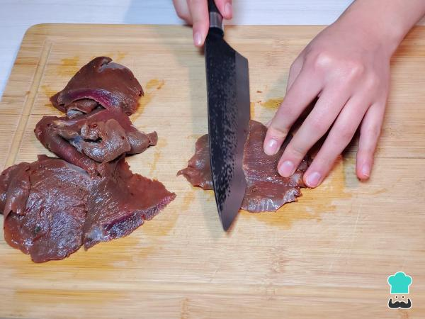
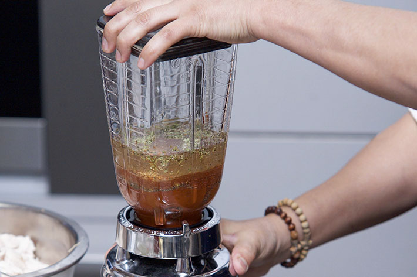
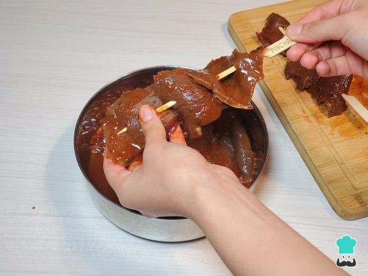
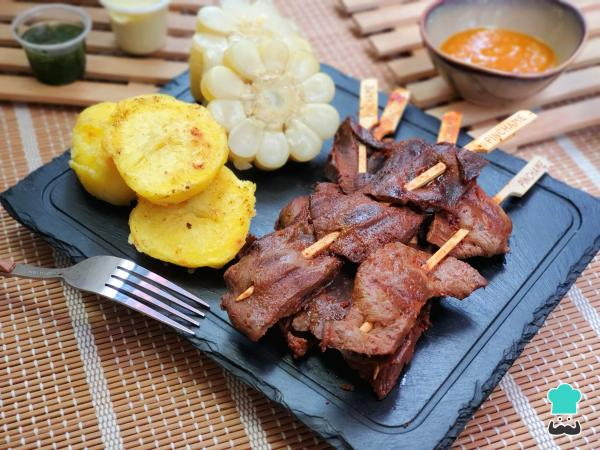

Sabor Criollo
Sabores peruanos que conquistan el corazón
Sabores peruanos que conquistan el corazón

Los Anticuchos son uno de los platos más representativos de la gastronomía peruana. Preparados con corazón de res marinado en ají panca, ajo, vinagre y especias tradicionales, se cocinan a la parrilla logrando un sabor ahumado único. Son un clásico infaltable de las calles y de las noches criollas.




Aprende a preparar anticuchos tradicionales con esta guía completa.